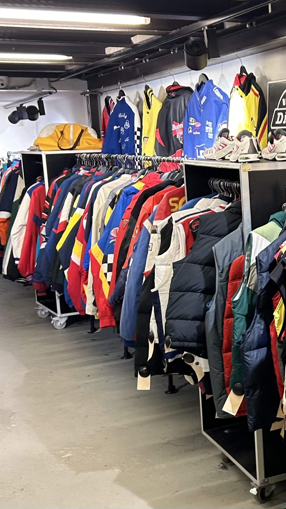

Winkels

Kilo store
Vind, Weeg, Draag
Dit is de slogan van de kilo store, een populaire vintage winkel in Amsterdam. Kilo Shop is een keten van vintage kledingwinkels die zijn oorsprong vindt in Frankrijk. Deze winkels staan bekend om hun unieke concept waarbij kleding op gewicht wordt verkocht in plaats van op individuele items. Klanten kunnen kleding uitkiezen en vervolgens betalen op basis van het gewicht van hun selectie. Het aanbod in Kilo Shops bestaat doorgaans uit tweedehands en vintage kledingstukken. Het idee is om een duurzamere en betaalbare winkelervaring te bieden, waardoor klanten unieke stukken tegen lagere kosten kunnen vinden.
Episode
Episode is een van de grootste vintage- en tweedehandswinkels in Amsterdam met 4 winkels door de hele stad. In de rest van nederland, buiten amsterdam hebben ze nog winkels in Haarlem, Rotterdam, Utrecht en Den Haag. Ze hebben in hun winkel veel bekende merken hangen voor goedkope prijzen.
Marbles Vintage
Ze hebben een hele winkel aan vintage spullen in de aanbieding, van ouderwetse camera's tot kleding uit de jaren 50 tot nu. Ook verkopen ze coole accessoires zoals sieraden, sjaals en zonnebrillen. Als je een fan bent van schoenen, heb je geluk! Marbles biedt ook een selectie klassieke schoenen, waaronder Dr Martens en Converse.